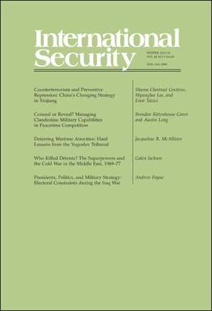

收录于合集 #新刊速递 123个


期刊简介

《国际安全》（International Security）是经过国际和国家安全领域同行评议的顶级学术期刊，其刊发的论文主题广泛，涵盖战争与和平等传统安全问题与环境、人口、人道主义、恐怖主义等时新的安全议题。它成立于1976年，由哈佛大学贝尔弗科学与国际事务中心（Belfer Center for Science and International Affairs at Harvard University）编辑，麻省理工学院出版社（MIT Press）出版，每年四期。2018年影响力因子为4.500，在“国际关系”类别的85种期刊中排名第二位。
本期编委
【编译】 王川 扎西旺姆 许文婷 赵雷
【校对】 崔宇涵
【审核】 周玫琳
【排版】 杨洋
本期目录
1. Conceal or Reveal? Managing Clandestine Military Capabilities in Peacetime Competition ****
隐藏还是揭示？ 在和平时期的竞争中管理秘密军事能力
**
**
2. Deterring Wartime Atrocities: Hard Lessons from the Yugoslav Tribunal
制止战时暴行： 前南国际刑庭的惨痛教训
**
**
3. Who Killed Détente? The Superpowers and the Cold War in the Middle East, 1969–77 ****
谁扼杀了缓和？ 超级大国和冷战在中东：1969-1977
**
**
4. Presidents, Politics, and Military Strategy: Electoral Constraints during the Iraq War ****
总统、政治和军事战略： 伊拉克战争中的选举约束
1.
隐藏还是揭示？在和平时期的竞争中管理秘密军事能力 ****
【题目】 Conceal or Reveal? Managing Clandestine Military Capabilities in Peacetime Competition
【作者】 Brendan Rittenhouse Green，辛辛那提大学政治学助理教授；Austin Long，美国联合参谋部战略计划和政策部核政策顾问。
【摘要】 ****
国际政治结果深受均势的影响，但一些军事能力依赖保密才能有效。 这些“秘密能力”（clandestine capabilities）会引发将军事优势转化为政治收益方面的问题。如果（己方的）秘密能力被揭示，对手可能会采取措施削弱这些秘密能力（给己方）带来的优势。另一方面，如果这些能力没有被揭示出来，对手就不会认识到真正的均势，并对之无动于衷。大多数现有文献强调了国家几乎没有动机表明他们的秘密能力。但仍有另一种结论值得讨论，即长期和平时期竞争的条件可以使表明（秘密能力）成为一个有利的决策。在这种情况下，两个重要的变量有助于确定一个国家是否会表明其秘密能力：能力的唯一性和对手的预期反应。对冷战战略反潜战（strategic antisubmarine warfare）的扩展个案研究（extended case study）证实了这些预测。
International political outcomes are deeply shaped by the balance of power, but some military capabilities rely on secrecy to be effective. These “clandestine capabilities” pose problems for converting military advantages into political gains. If clandestine capabilities are revealed, adversaries may be able to take steps that attenuate the advantages they are supposed to provide. On the other hand, if these capabilities are not revealed, then adversaries will be unaware of, and unimpressed by, the real balance of power. Most of the existing literature emphasizes that states have few incentives to signal their clandestine capabilities. This conclusion deserves qualification: the condition of long-term peacetime competition can make signaling a profitable decision. Within this context, two important variables help determine whether a state will signal or conceal its secret capabilities: the uniqueness of the capability and the anticipated responsiveness of the adversary. An extended case study of Cold War strategic antisubmarine warfare confirms these predictions.
** 【编译】 王川**
** 【校对】 崔宇涵**
** 【审核】 周玫琳**
2. ****
遏制战时暴行：前南国际刑庭的惨痛教训
【题目】 Deterring Wartime Atrocities: Hard Lessons from the Yugoslav Tribunal
【作者】 Jacqueline R. McAllister，凯尼恩学院（Kenyon College）政治学助理教授。其目前的研究重点为国际刑事法庭是否、如何以及何时影响针对平民的暴力与和平进程。她的研究借鉴了于荷兰、克罗地亚、波斯尼亚- 黑塞哥维那、科索沃、塞尔维亚和马其顿等地广泛收集的档案和采访数据。
【摘要】 ****
战时国际刑事法庭（international criminal tribunals，简称ICTs）的倡导者希望这类法庭能够遏制战斗人员对平民的暴行。 然而首个战时国际刑事法庭——前南斯拉夫问题国际刑事法庭（the International Criminal Tribunal for the former Yugoslavia，简称ICTY，以下简称“前南国际刑庭”）——如今已成立25年，但其在遏制此类暴行方面的作用仍颇有争议。来自于犯罪学的观点及关于国内冲突和国际法律合规的研究表明, 国际刑事法庭在以下三个条件并存时最有可能遏制政府和反对派军队对平民犯下暴行：（1）国际刑事法庭官员已获得足够的公诉支持，（2）战斗组织依靠自由选区的支持，（3）战斗组织具有集中化的结构。本文通过对前南国际刑庭对南斯拉夫冲突中的14个战斗团体的影响的个案研究，以及对战争退伍军人及其他人员的数百次实地采访，证实了这一预测。因此，前南国际刑庭的记录为当代战时国际刑事法庭——包括国际刑事法院（International Criminal Court）——如何以及何时能够成功地遏制战斗人员对平民的暴行提供了重要的启示。
Advocates of wartime international criminal tribunals (ICTs) hope that such tribunals can deter combatant atrocities against civilians. Yet, more than twenty-five years after the establishment of the first wartime ICT—the International Criminal Tribunal for the former Yugoslavia (ICTY)—wartime ICTs’ role in deterring such violence remains a matter of debate. Insights from criminology, as well as research on civil conflicts and international legal compliance, suggest that ICTs are most likely to deter government and rebel forces from committing atrocities against civilians when all three of the following conditions are present: (1) ICT officials have secured sufficient prosecutorial support, (2) combatant groups rely on support from liberal constituencies, and (3) combatant groups have centralized structures. Case studies of the ICTY’s impact on fourteen combatant groups from the Yugoslav conflicts—combined with hundreds of field interviews with war veterans and others—confirm this prediction. The ICTY’s record thus sheds important light on how and when contemporary wartime ICTs—including the International Criminal Court—might succeed in deterring combatant atrocities against civilians.
【编译】扎西旺姆
【校对】崔宇涵
【审核】周玫琳
3.
谁扼杀了缓和？超级大国和冷战在中东：1969-1977 ****
【题目】 Who Killed Détente? The Superpowers and the Cold War in the Middle East, 1969–77
【作者】 Galen Jackson，威廉姆斯学院政治学系助理教授
【摘要】 ****
有关美苏间20世纪70年代缓和（Détente）终结的经典解释强调苏联无法为了和美国实现更具合作性的关系而搁置其共产主义意识形态。 许多分析人士认为，这一时期苏联对达成一种稳定和解的拒斥在中东地区尤为明显，在该地区，据说苏联方面已接受了针对以色列的“激进的阿拉伯计划”。但根据历史证据，这种论述并不能站得住脚。正相反，历史证据表明苏联当时迫切地想与美国合作，以达成一份阿以协议。但是理查德·尼克松和杰拉尔德·福特政府都对与苏联在中东打交道不感兴趣，而是试图将之逐出这一地区。这些发现对以下两组学术争论有重要意义：一是关于对立大国是否能在战略利益交叠的议题上进行合作的辩论，二是关于美国针对中国、伊朗、朝鲜和俄罗斯等国的政策的当代争议 。
Standard explanations for the demise of U.S.-Soviet détente during the 1970s emphasize the Soviet Union’s inability to put aside its communist ideology for the sake of a more cooperative relationship with the United States. Soviet resistance to reaching a stable accommodation during this period, many analysts maintain, was especially evident in the Middle East, where Moscow is said to have embraced the “radical Arab program” vis-à-vis Israel. Such accounts do not fare well, however, in light of the historical evidence. Instead, that evidence indicates that the Soviet Union was eager to cooperate with the United States to achieve an Arab-Israeli agreement. The Richard Nixon and Gerald Ford administrations, however, were not interested in working with the Soviets in the Middle East, and instead sought to expel them from the region. These findings have important implications for scholarly debates about whether great power rivals can cooperate on issues where their strategic interests are overlapping, as well as for contemporary debates over U.S. policy toward countries such as China, Iran, North Korea, and Russia.
【编译】许文婷
【校对】崔宇涵
【审核】周玫琳
4.
总统、政治和军事战略:伊拉克战争中的选举约束 ****
【题目】 Presidents, Politics, and Military Strategy: Electoral Constraints during the Iraq War
【作者】 Andrew Payne，牛津大学政治学与国际关系系赫德利·布尔（Hedley Bull）国际关系研究员
【摘要】 ****
在战时，选举政治如何影响总统的决策？ 作为（军队）总司令和民选官员，总统在评估战争中可行的军事战略时，不可避免地要平衡国家利益和政治生存的相互竞争的目标。然而，在持续的冲突中，选举压力如何以及何时影响决策仍不明晰。从民主问责制的逻辑出发，可以推断出两种约束机制。首先，总统们可能会推迟做出那些被认为会带来过大选举风险的决定。其次，选举压力可能会产生一种抑制作用，导致总统淡化政治上敏感的行动，以最小化预期的反弹。在（本文）对伊拉克战争后半期决策的一项案例研究中，最近解密的文件以及对高级政府官员和军方人士的采访阐明了这些机制。乔治·W·布什2007年的增兵决定以及巴拉克•奥巴马2011年的撤军决定，都显示出战时决定受到相关国内政治日程的深刻影响。这些发现需要进一步研究选举周期影响战时决策的微妙方式。
How do electoral politics affect presidential decisionmaking in war? As both commander in chief and elected officeholder, presidents must inevitably balance competing objectives of the national interest and political survival when assessing alternative military strategies in war. Yet, how and when electoral pressures influence decisionmaking during an ongoing conflict remains unclear. Drawn from the logic of democratic accountability, two mechanisms of constraint may be inferred. First, presidents may delay making decisions that are perceived to carry excessive electoral risk. Second, electoral pressures may have a dampening effect, causing presidents to water down politically sensitive courses of action to minimize any expected backlash. Recently declassified documents and interviews with senior administration officials and military figures illustrate these mechanisms in a case study of decisionmaking during the second half of the Iraq War. Both George W. Bush’s surge decision of 2007 and Barack Obama’s decision to withdraw troops in 2011 are shown to have been profoundly influenced by concerns related to the domestic political calendar. These findings call for further study of the nuanced ways in which the electoral cycle shapes wartime decisionmaking.
【编译】赵雷
【校对】崔宇涵
【审核】周玫琳
【新刊速递】第12期 | International Affairs, Vol.95, No.6，2019
【新刊速递】第13期|Chinese Journal of International Politics, No.4, 2019
【新刊速递】第14期|Chinese Journal of International Politics, No.3, 2019
【新刊速递】 第15期 | International Organization, No.4, 2019
【新刊速递】第16期 | International Studies Quarterly, No.4, 2019
【新刊速递】第17期 | World Politics, Vol.72, No.1, 2020
【新刊速递】 第18期 | Security Studies Vol.28, No.5, 2019
【新刊速递】第19期 | Review of International Studies, No.1, 2020
【新刊速递】第20期 | International Studies Quarterly, No.4, 2019

国政学人
支持学术公益与知识传播
微信扫一扫赞赏作者 __赞赏
已喜欢，对作者说句悄悄话
取消 __
发送给作者
发送
最多40字，当前共字
上一页 1/3 下一页
长按二维码向我转账
支持学术公益与知识传播
受苹果公司新规定影响，微信 iOS 版的赞赏功能被关闭，可通过二维码转账支持公众号。